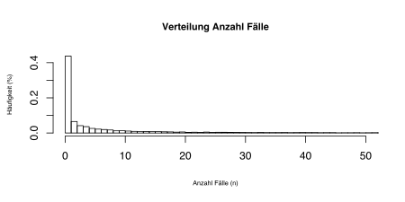

Willkommen
Willkommen auf unserer Web-Applikationsseite. Im Rahmen der Open-Data Veranstaltung des Instituts für Wirtschaftsinformatik der Universität Bern haben wir diese App zur Visualisierung der Schweizer Operationsklassifikation (CHOP) entwickelt.
Die App erlaubt es die über 20'000 Kodes, nach unterschiedlichen statistischen Eigenschaften sortiert, hierarchisch darzustellen und zu durchsuchen.
Projekt Info
Das Ziel dieser Arbeit war es in Einer- oder Zweierteams und mithilfe eines Datencoaches einen (öffentlichen) Datensatz zu wählen und diesen nach bestimmten Vorgaben mit d3.js zu visualisieren. Wir haben uns jeweils für Zweiters entschieden. Dabei haben wir uns für den Projektvorschlag von Herrn Michael Fichter von Deloitte entschieden, das Schweizer Operationsklassifikationssystem zu visualisieren.
expand_more
Daten
Bei den visualisierten Daten handelt es sich um öffentlich zugänglichen Datensätze des BFS zur
Schweizerischen Operationsklassifikation (CHOP)
und Medizinischen Statistik der Krankenhäuser, beide aus dem Jahr 2014.
Die statistischen Informationen wiederspiegeln Daten der stationären Grundversorgung aller Schweizer Krankenhäuser und Kliniken.
Inkludiert haben wir dabei die Anzahl Fälle (n), durchschnittliche Aufenthaltsdauer (DAD), Standardabweichung (SD) und eine meta Variable totale Aufenthaltsdauer (TAD). TAD kombiniert die Anzahl Fälle mit der durchschnittlichen Aufenthaltsdauer (TAD = n x DAD) und zeigt somit, welche Behandlungen insgesamt am meisten stationäre Zeit verbraucht haben.
(Beachte: Alle Zahlen beziehen sich auf das Jahr 2014). expand_more
Die statistischen Informationen wiederspiegeln Daten der stationären Grundversorgung aller Schweizer Krankenhäuser und Kliniken.
Inkludiert haben wir dabei die Anzahl Fälle (n), durchschnittliche Aufenthaltsdauer (DAD), Standardabweichung (SD) und eine meta Variable totale Aufenthaltsdauer (TAD). TAD kombiniert die Anzahl Fälle mit der durchschnittlichen Aufenthaltsdauer (TAD = n x DAD) und zeigt somit, welche Behandlungen insgesamt am meisten stationäre Zeit verbraucht haben.
(Beachte: Alle Zahlen beziehen sich auf das Jahr 2014). expand_more
CHOP info_outline
Die CHOP ist ein hierarchisch aufgebautes System mit über 20'000 Kategorien, das alle Behandlungen/ Operationen umfasst und die entsprechende Kodierung ermöglicht. Anhand von Kodierungen werden schlussendlich die Primärdienstleister (Spitäler, Kliniken etc.) über das Swiss DRG System pauschal vergütet.
Ursprünglich entstammt die CHOP dem amerikanischen ICD-9-CM wurde aber seitdem wiederholt überarbeitet und an die lokalen Begebenheiten angepasst. expand_more
Ursprünglich entstammt die CHOP dem amerikanischen ICD-9-CM wurde aber seitdem wiederholt überarbeitet und an die lokalen Begebenheiten angepasst. expand_more
Diagramme
Die Grafiken verdeutlichen die zehn häufigsten Kodes anhand der jeweiligen Kategorie.
Vergleicht man die Anzahl Fälle mit der Total Verursachten Aufenthaltsdauer, ist sofort ersichtlich, dass die häufigsten Fälle nicht zwingendermassen am meisten Aufwand und damit verbundene Kosten verursachen. So ist beispielsweise die Rehabilitation nicht die Häufigste Behandlung, wohl aber die Zeitaufändigste.
Bei der Durschnittlichen Aufenthaltsdauer gibt es Behandlungen, die im Schnitt beinahe ein Jahr in Anspruch nehmen. Dabei sollte allerdings beachtet werden, dass die Statistik bei so langer Aufenthaltsdauer etwas verfälscht sein kann, da die Daten nur ein Jahr erfassen und daher Aufenhalte, die länger als ein Jahr dauern, nicht korrekt abgebildet werden. expand_more
Die Standardabweichung zeigt Fälle, bei welchen die damit einhergehnde Aufenthaltsdauer nur schwer einzuschätzen ist. Möglicherweise sind solche Behandlungen etwas weniger effektiv oder wirken sehr subjektbezogen, schlussendlich ist dies aber schwer zu interpretieren und muss nicht unbedingt zutreffen.
Vergleicht man die Anzahl Fälle mit der Total Verursachten Aufenthaltsdauer, ist sofort ersichtlich, dass die häufigsten Fälle nicht zwingendermassen am meisten Aufwand und damit verbundene Kosten verursachen. So ist beispielsweise die Rehabilitation nicht die Häufigste Behandlung, wohl aber die Zeitaufändigste.
Bei der Durschnittlichen Aufenthaltsdauer gibt es Behandlungen, die im Schnitt beinahe ein Jahr in Anspruch nehmen. Dabei sollte allerdings beachtet werden, dass die Statistik bei so langer Aufenthaltsdauer etwas verfälscht sein kann, da die Daten nur ein Jahr erfassen und daher Aufenhalte, die länger als ein Jahr dauern, nicht korrekt abgebildet werden. expand_more
Die Standardabweichung zeigt Fälle, bei welchen die damit einhergehnde Aufenthaltsdauer nur schwer einzuschätzen ist. Möglicherweise sind solche Behandlungen etwas weniger effektiv oder wirken sehr subjektbezogen, schlussendlich ist dies aber schwer zu interpretieren und muss nicht unbedingt zutreffen.

An der Verteilung der Anzahl Fälle pro Kode sieht man, dass die meisten (>40%) eine sehr geringe Fallzahl aufweisen. Dabei weist rund 1/3 gar keine Fälle auf. Diese Zahlen werfen die Frage nach der Effizenz dieses Klassifikationssystems auf, obwohl hier natürlich nur ein Jahr berücksichtigt wurde. Unsere Beobachtungen zur Schweizerischen Operationsklassifikation (CHOP) scheinen den allgemeinen Zustand der schweizerischen Gesundheitsversorgung zu wiederspiegeln. In diesem Sinne will der Bund in naher Zukunft medizinische Leistungen und Gesundheitstechnologien systematisch auf Ihre Effizienz hin untersuchen, worunter natürlich auch die CHOP fällt.
expand_more
Über Uns
Laetitia Auderset
Bachelor Studentin BWL
email lau.opendata@gmail.com
email lau.opendata@gmail.com
Narayan Schütz
Master Student Bioinformatik
email nsc.opendata@gmail.com
email nsc.opendata@gmail.com